Produits cachers au Japon
Les produits cachers trouvables au Japon, les produits japonais cachers à acheter ou importer depuis la France, et les adresses pour s'en procurer.
À savoir avant d'acheter
Ces produits sont certifiés cachers uniquement au Japon, s'ils sont fabriqués au Japon, ou s'ils portent un symbole cacher. Ce site présente des produits japonais cachers et des produits cachers que l'on trouve au Japon.
Attention aux KitKat
Les KitKat ne sont cachers que s'ils proviennent des États-Unis ou d'Europe, et cela dépend aussi de l'usine. Vérifiez le pays de fabrication et le symbole de certification sur l'emballage, avec Is It Kosher ou auprès de votre rabbin.
Sur place au Japon
- La cacherout au Japon (Chabad Tokyo)
Beaucoup d'informations utiles et nécessaires, surtout si vous prévoyez d'y aller.
- Poissons cachers et leurs noms japonais
Liste publiée sur le site de Chabad Japan.
- David's Deli
Restaurant glatt cacher à Tokyo : cuisine israélienne et méditerranéenne, repas de Chabbat, livraison.
Listes de référence
- Consistoire de Paris : produits sélectionnés 2025-2026
Utile dans les deux sens : pour les produits japonais en France, et pour les produits français vendus au Japon. Dans ce cas, vérifiez bien qu'ils viennent de France.
- Liste du Rav Wolff : Picard et produits d'Europe ou des États-Unis
À consulter pour les produits Picard (il y a des magasins Picard au Japon) et pour les produits importés d'Europe ou des États-Unis. La liste est renouvelée régulièrement : prenez la version en vigueur. Elle reste indicative : en cas de doute, demandez à votre rabbin.
Vérifier un produit
- Is It Kosher
Application et site qui interrogent de nombreuses bases de certification, avec scan de code-barres. Le scan échoue parfois : cherchez alors par nom de produit et de marque.
- Recherche de produits OK
OK Kosher Certification.
- Recherche de produits OU
Orthodox Union.
- Recherche de produits KLBD
Kosher London Beth Din.
Produits cachers disponibles au Japon
Des produits à trouver sur place, en supermarché (dont Costco et Don Quijote) ou en ligne. Les pastilles (OU, OK, KLBD, Star-K…) indiquent le symbole de certification à repérer sur l'emballage.
Riz
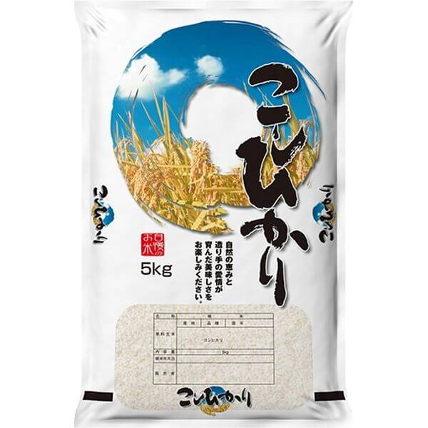
Tout riz nature, 100 % riz
Riz instantané Iris Oyama
Selon le rabbin. Trouvable au Japon (lien Amazon Japon) comme en France (Kioko). Idéal en voyage : il suffit d'un micro-ondes ou d'eau bouillante.
Nouilles
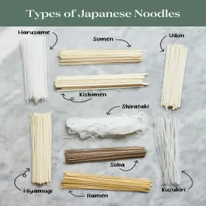
Toutes les nouilles sèches (ni instantanées, ni précuites)
Uniquement ces ingrédients : farine de blé et/ou de sarrasin, eau, sel. Les nouilles aux œufs ne sont pas autorisées.
Toa Foods
Produits cachers Toa Foods : uniquement avec le symbole ⓒ.
Miso
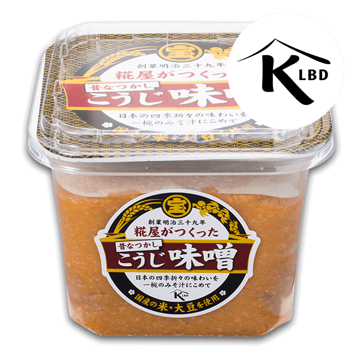
Miso kouji Horaiya
Miso cacher Hikari
Pensez à sélectionner « Kosher ».
Produits cachers Horaiya
Cliquez sur une liste pour l'agrandir.
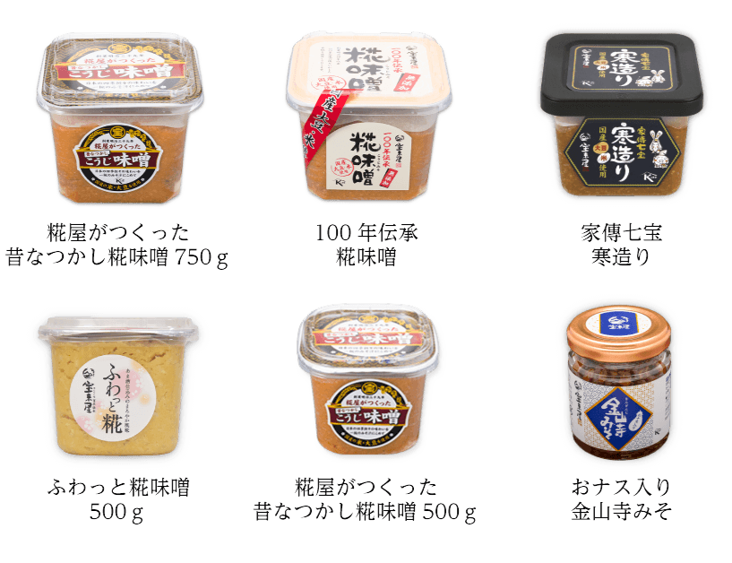
Miso 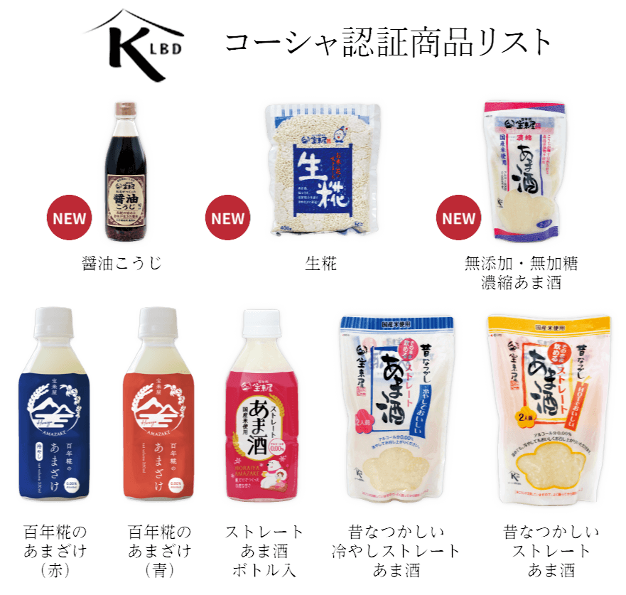
Kouji et produits dérivés


Pour la cuisine
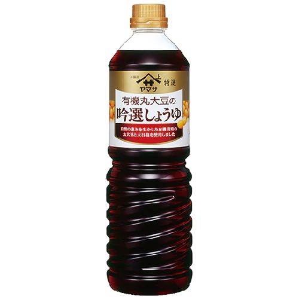
Sauce soja Yamasa Yuki Maru-Daizu Shoyu
Selon le rabbin.
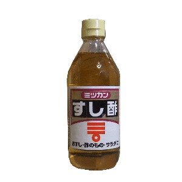
Assaisonnement pour sushi Mizkan Sushisu
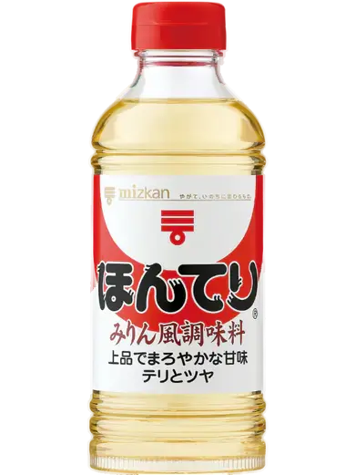
Mirin Mizkan Honteri (assaisonnement sucré)
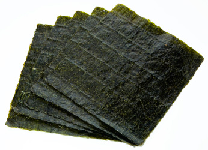
Nori
Achetez du nori avec un symbole cacher si possible. Seul le nori 100 % nori est autorisé, mais soyez prudent : vérifiez chaque feuille des deux côtés, à la lumière, pour repérer de micro-crustacés. Le principe est expliqué ici.
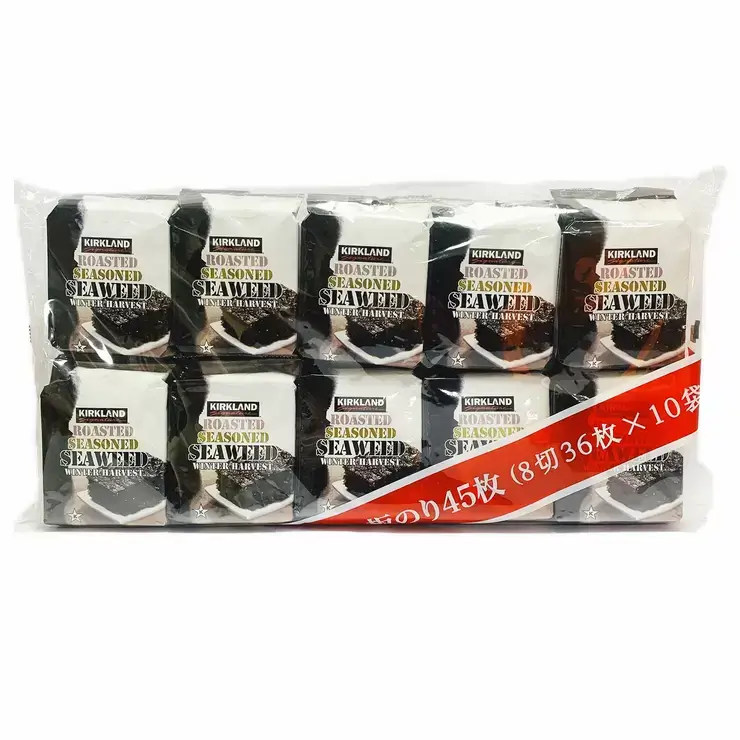
Nori Kirkland (Costco)
À trouver au supermarché Costco.
Assaisonnements
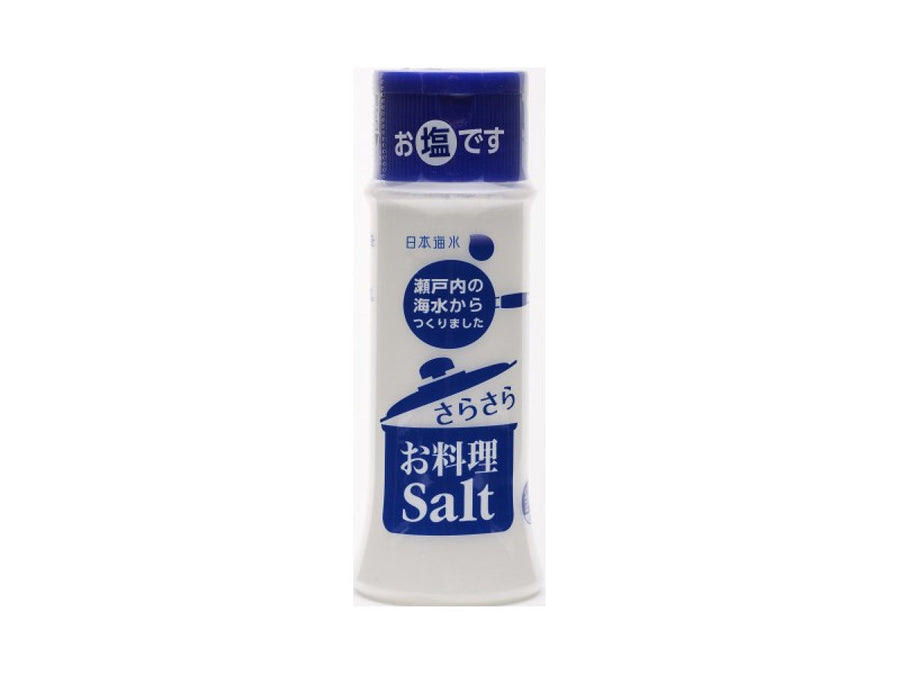
Sel (塩)
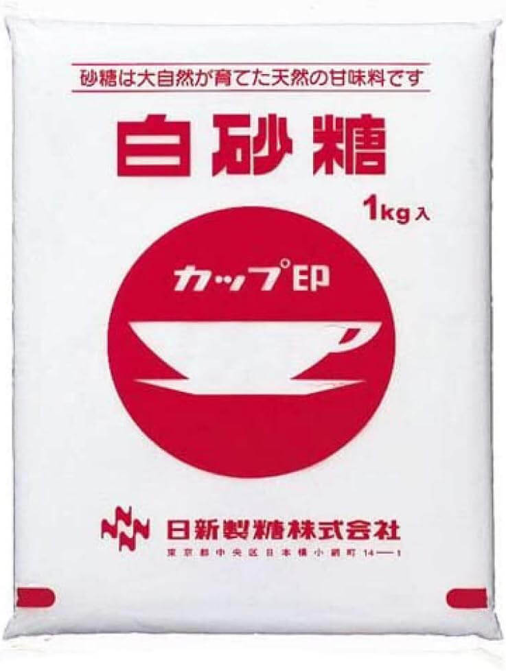
Sucre (日新製)
Heinz Seriously Good Mayonnaise 460 g
Uniquement les pots en verre de 460 g (480 ml) et 680 g (710 ml).
Snacks
Boissons
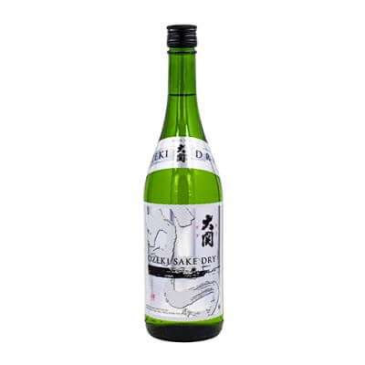
Saké : tous les Junmaishu « 純米酒 »
Exemple ci-contre.
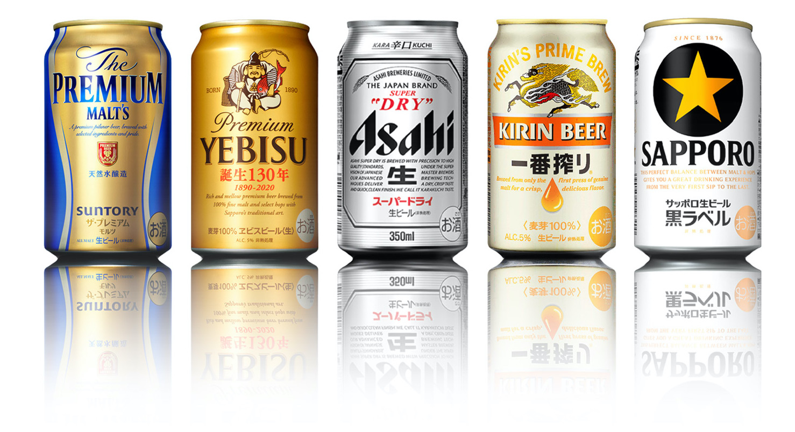
Bière : toutes les bières pures (生ビール)
Sans arômes ni additifs. Exemples ci-contre.
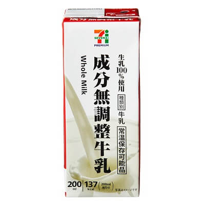
Lait : uniquement chalav nochri
⚠ Uniquement du chalav nochri (lait non surveillé) : 100 % lait 牛乳 / 成分無調整 生乳100％.
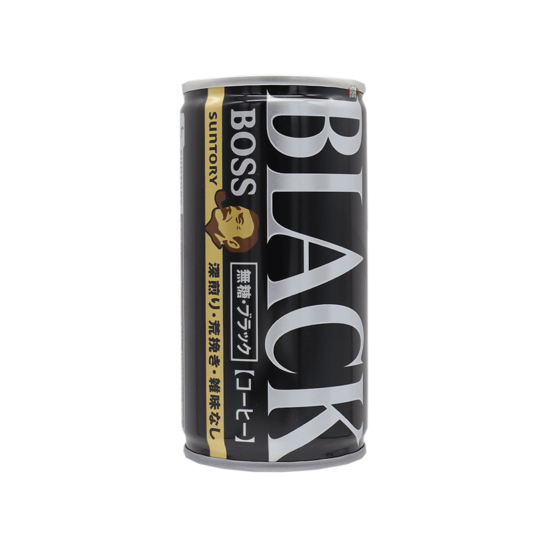
Café
Boss 100 % black coffee, ou tout café 100 % non sucré.
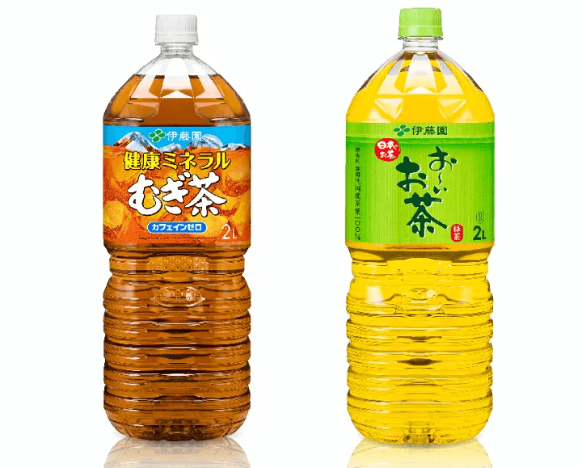
Thé
Thé pur 生茶 et thé non sucré : thé d'orge, thé vert…
Produits japonais cachers, à trouver en France
Des produits japonais que l'on peut acheter ou importer depuis la France.
À Paris, le quartier japonais se trouve autour des stations de métro Opéra et Pyramides. Le magasin Kioko / 京子 propose la plupart des produits de cette liste, surtout à Opéra, ainsi que des légumes frais : shiitake, enoki, shiso ou satsuma-imo.
Certains produits asiatiques ou japonais certifiés cachers se trouvent aussi chez Hypercasher (par exemple le nori ou le vinaigre de riz). Achetez de préférence un produit avec un tampon de cacherout quand il y en a un.
Riz instantané Iris Oyama
Vendu chez Kioko, et aussi au Japon.
Udon Toa Foods, sans gluten
Chez Kioko. Marque Toa Foods : uniquement avec le symbole ⓒ.
Somen Toa Foods, sans gluten
Chez Kioko. Marque Toa Foods : uniquement avec le symbole ⓒ.
Vinaigre de riz pour sushi Mizkan
Vendu chez Kioko.
Mizkan Honteri, assaisonnement style mirin
Vendu chez Kioko.
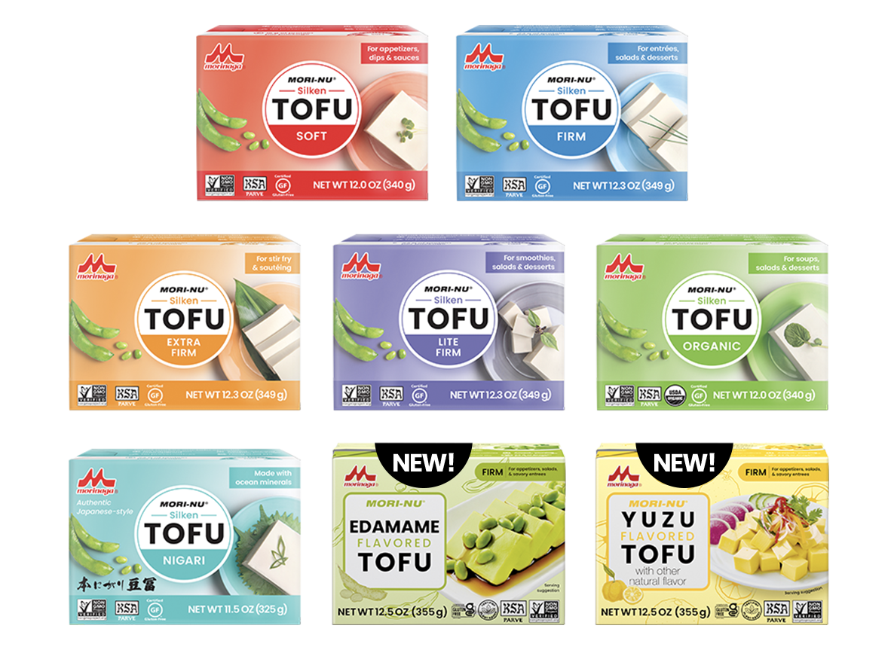
Tofu Morinaga
Tous les produits portant le symbole KSA. Uniquement aux États-Unis ou hors du Japon.
Pour vérifier un produit, consultez les listes de référence et les outils de vérification : liste du Consistoire de Paris, liste du Rav Wolff et Is It Kosher.
Fournisseurs et adresses
Où commander ou acheter des produits cachers au Japon.
Fournisseurs cachers et communautés
David's Deli
Restaurant glatt cacher à Tokyo (Minato) : cuisine israélienne et méditerranéenne, repas de Chabbat, livraison et traiteur. Certifié par Japan Kosher Services selon leur site.
Chabad Tokyo (rav Binyamin Edery)
Kosher Delica : traiteur cacher sous la supervision du rav Binyamin Edery, avec livraison dans tout le Japon ou repas à la Maison Chabad. Réservez au moins 3 jours à l'avance, par WhatsApp.
Chabad Kyoto
Nourriture cachère, repas de Chabbat et informations pour les visiteurs à Kyoto, dont une page « To keep kosher in Japan ».
JCC Japan / Tokyo
Communauté juive du Japon, à Tokyo : repas de Chabbat et « Kosher Kitchen ».
Magasins où trouver ces produits
Don Quijote (Donki)
On y trouve aussi des produits cachers : cherchez le symbole de certification sur l'emballage.
Kaldi Coffee Farm
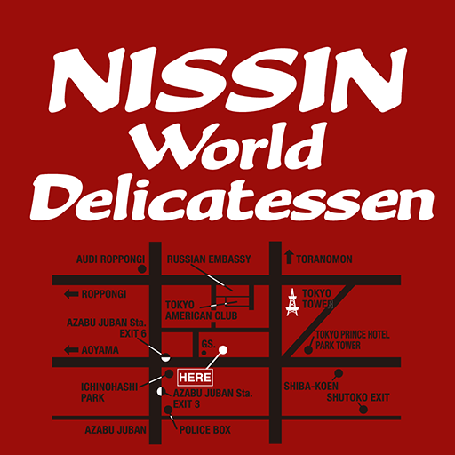
Nissin World Delicatessen